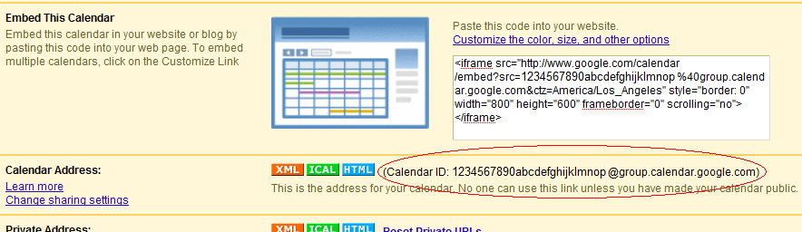

Welcome to the Weekly Time Totals Google Calendar Gadget! This gadget is a
simple tool to help you view how many hours per week you allot to different
activities. The gadget works by adding up the hours of your events
based on the titles of your events. Hence,
if you use the same event titles many times, then this gadget is for you.
The main idea behind this gadget is to help you see how many hours you spend
doing different activities. For example, if you eat lunch for 30 minutes every
day of the week, and you have an event for this entitled "Lunch", then the
Weekly Time Totals gadget will display "Lunch: 3.50 hours".
As you can see above, the gadget fits along side other Google Calendar
gadgets and is very simple to use.
How To Use the Gadget:
- Get the gadget. If you clicked on the link from your Google Calendar, then
you already have the gadget--skip to step 2. Otherwise, to get the Weekly Time
Totals gadget,
click here. You can also use the "Add gadget by URL" gadget to add my
gadget to your calendar homepage. Simply use the following URL:
https://sites.google.com/site/weeklytimecounts/totaltime.xml
- Find Calendar ID. Click on "Settings" in the Google Calendar main page.
Then go to the "Calendars" tab. Click on a calendar with which you want to use
the Weekly Time Totals gadget. Scroll down and in the section labeled "Calendar
Address", there will be your Calendar ID. Highlight and copy this. It should
look like this:
- Insert Calendar ID. Go back to the main page and paste the Calendar ID into
the input area labeled "Calendar ID". After this, press "Refresh".
- See your weekly time totals. In the textarea below the "Refresh" button,
your weekly time totals for this calendar will be displayed.
- Add more calendars. Repeat steps 2 through 4 to add more time totals. These
time totals will appear below any totals already inside the textarea. Simply
scroll down to view all the time totals.
- View weekly time totals better. Unfortunately, Google Calendar gadgets do
not have much space to view all the weekly time totals. One thing you can do to
alleviate this is to copy all the text in the textarea and paste it into your
favorite text editor.
TO-DO's
- Right now Google's Calendar Gadget API does not provide great functionality
for working with users' multiple calendars. This is why you need to add
calendars individually, one-by-one, using the Calendar ID. When Google's API
improves, I'll have to update this gadget to automatically show time totals for
every calendar that the user has shown on the main page.
- BUG: Currently, the gadget only shows the hours for the current week,
according to the user's computer's local time. We need to add functionality to
use the week shown on the calendar. Work around: simply change your computer's
clock to a future date.
- Add functionality to show multiple calendar weekly time totals at the same
time (i.e. do not use only one calendar ID at a time).
Questions, comments, suggestions? Please email me at bnuernberger [at]
cs.ucsb.edu.
Disclaimer: Use this gadget at your own risk. It is still under development, but
it is usable and hopefully will help you in your weekly schedule planning.